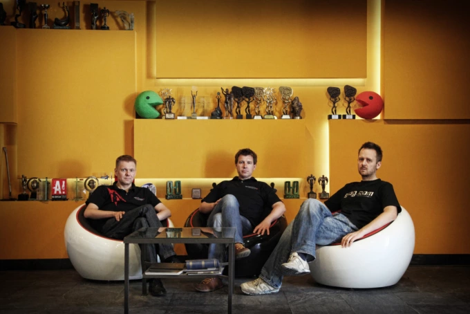

Индустрия игр |
Боря Жожоба |
18 фев в 15:45 |
14 736 |
Как CD Projekt RED общалась с публикой во время разработки The Witcher 3: Wild Hunt.
Последние пару лет индустрии запомнились громкими скандалами, что разгорелись между разработчиками и игроками. В этом плане особенно отличилась «корпорация зла» EA, а если точнее — подконтрольная ей студия DICE. Со скрипом реабилитировавшись после ситуации с лутбоксами в Battlefront 2, шведы умудрились еще сильнее разозлить свою аудиторию во время презентации пятой Battlefield. На критику некоторых вызывающих элементов кастомизации вроде протезов и ярких раскрасок, не соответствующих тематике Второй мировой, авторы в ответ обвинили игроков в сексизме (главной героиней дебютного ролика была девушка) и заявили нечто вроде «не нравится — не покупайте». Как итог, неутихающие скандалы нанесли DICE огромный репутационный ущерб, напрямую повлиявший на продажи Battlefield 5 Ввиду столь феноменально неправильного ведения диалога с аудиторией, мне вспомнился противоположный случай общения авторов с сообществом. Речь идет о студии CD Projekt RED и их главном шедевре The Witcher 3: Wild Hunt.
Спустя месяц после анонса третьего «Ведьмака», в марте 2013 года, студия заверила, что создание видеоигр для них в первую очередь творчество и лишь потом — бизнес. Поэтому разработчики не собираются уходить под крыло стороннего издателя. Об этом в интервью изданию Gameindustry.biz заявил Адам Бадовски, на тот момент генеральный директор CD Projekt RED.
Независимость — важнейшая часть нашей стратегии. Это означает, что мы должны быть независимы в двух отношениях — финансово и творчески. Являясь публичной компанией, мы представлены на варшавской фондовой бирже, что дает нам финансовую независимость и творческий контроль над всеми нашими сериями. Поэтому мы можем инвестировать в наш собственный бизнес с полной творческой свободой. Конечно, мы могли бы взять на стороне дополнительные деньги или опыт, но это вряд ли сделает нас счастливее.
Адам Бадовски |
Бывший генеральный директор CD Projekt RED |
Следом разработчики порадовали игроков новостью о том, что в The Witcher 3 не будет DRM-защиты. Вообще, данная тема была особо животрепещущей для студии — в интервью различным изданиям разработчики не раз напоминали об отсутствии каких-либо средств защиты в PC-версии игры. Вот что, к примеру, на вопрос журналиста из Kotaku, касаемый наличия DRM в The Witcher 3, ответил геймдизайнер Матей Шчесник:
Мы пытаемся избавиться от DRM. Если кто-то захочет украсть нашу игру, он в конце концов это сделает.
Матей Шчесник |
Геймдизайнер |
Не остался в стороне вопроса и Адам Бадовски, который также присутствовал на интервью:
Конечно, пиратство — это плохо. Но с этим ничего не поделаешь. Мы стремимся дать игрокам все самое лучшее. Когда мы убрали DRM из The Witcher 2, люди на торрент-трекерах просили людей не скачивать нашу игру, просто потому что мы не использовали защиту.
Адам Бадовски |
Бывший генеральный директор CD Projekt RED |
Что самое интересное, все это было сказано спустя ровно месяц после громкого скандала, связанного с DRM-системой в SimCity (привет, EA!). Тогда игра в течение нескольких недель с начала запуска испытывала проблемы с подключением к сети, без которого нельзя было войти даже в однопользовательский режим. Сосчитайте сами, сколько очков кармы прибавила себе CD Projekt RED после своих слов на фоне очередного провала Electronic Arts.
В июле 2013 года вскрылись интересные подробности касательно бизнес-стратегии студии. О них в интервью изданию Gamasutra рассказал Марчин Ивински, со-основатель CD Projekt RED. Для понимания общего смысла он привел в пример выпуск расширенных версий дилогии The Witcher, которые студия сделала бесплатными.
Игроки это ценят. Затем они говорят своим друзьям, что мы делаем хорошую работу и в целом уважаем их. В конечном итоге это приведет к продажам. Некоторые люди говорят: "Зачем ты это делаешь? Ты мог заработать на этом!" Да. Но я думаю, что ценность этого предложения состоит в том, что мы честны, прямолинейны и справедливы, и это окупается. Так что вы можете считать эту позицию своего рода бизнес-моделью.
Марчин Ивински |
Со-основатель CD Projekt RED |
На тему дополнительного контента высказался также Конрад Томашкевич, геймдиректор The Witcher 3. Причем заявление относилось непосредственно к игре.
Игроки это ценят. Затем они говорят своим друзьям, что мы делаем хорошую работу и в целом уважаем их. В конечном итоге это приведет к продажам. Некоторые люди говорят: "Зачем ты это делаешь? Ты мог заработать на этом!" Да. Но я думаю, что ценность этого предложения состоит в том, что мы честны, прямолинейны и справедливы, и это окупается. Так что вы можете считать эту позицию своего рода бизнес-моделью.
Марчин Ивински |
Со-основатель CD Projekt RED |
На тему дополнительного контента высказался также Конрад Томашкевич, геймдиректор The Witcher 3. Причем заявление относилось непосредственно к игре.
Мы могли бы продавать дополнительный контент после релиза игры, но мы в это не верим. Мы считаем, что патчи, исправления и дополнения должны предоставляться игрокам бесплатно. Только нечто по-настоящему большое, нечто, что не заставит вас чувствовать себя ограбленными, заслуживает ценника. Если мы когда-нибудь решим брать с вас за что-то деньги, то уверен, вы оцените, то что получите взамен.
Конрад Томашкевич |
Геймдиректор The Witcher 3 |
И разработчик не лукавил. После релиза «Ведьмак 3» получил свыше полутора десятка бесплатных мини-дополнений и множество патчей. Исключением стали «Каменные сердца» и «Кровь и вино» — за них студия попросила деньги. Они и стали «чем-то по-настоящему большим»: оба дополнения суммарно расширили сюжет игры аж на пятьдесят часов. Новые истории, новые механики, новый регион, даже целая колода настоящих карт «Гвинт» в коробочной версии — поверьте, мистер Томашкевич, никто не почувствовал себя ограбленным.
Впрочем, особой гордостью CD Projekt RED стали именно шестнадцать бесплатных DLC, что после релиза игры выходили по две штуки в неделю. Подобный подход к выпуску побочного контента студия пыталась привить и другим разработчикам.
Я хотел бы выразить благодарность всем геймерам, которые играли в нашу игру и опробовали эти дополнения. Ничто не делает разработчика счастливее, чем видеть игроков, которые весело проводят время с тем, что он создал. Мне бы очень хотелось, чтобы такие инициативы стали стандартом в индустрии, а не исключением из общего правила. Я надеюсь, что The Witcher 3: Wild Hunt подал хороший пример.
Марчин Ивински |
Со-основатель CD Projekt RED |
Вообще, к вопросу DLC разработчики относились крайне щепетельно и старались заранее сгладить возможные острые углы. Так, в разговоре с Eurogamer студия затронула тему сегрегации игроков по платформенному признаку, пообещав не выпускать эксклюзивный контент для определенных платформ.
Мы не будем выпускать эксклюзивный контент ни на одну из платформ, как и не станем задерживать выпуск игры ни на одной из них, лишь потому, что кто-то будет готов нам за это заплатить. Это противоречит нашим ценностям.
Марчин Ивински |
Со-основатель CD Projekt RED |
Не обошли разработчики стороной и микротранзакции — явления, достаточно болезненного для игроков, особенно если оно касается одиночных игр. Не поверите, но тут вновь не обойдется без упоминания EA. Ровно за месяц до катастрофического фиаско с SimCity издатель угодил в скандал, введя микротранзакции в Dead Space 3 — сюжетный хоррор-боевик. Причем покупать за реальные деньги предлагалось не косметику, а детали и даже боеприпасы для оружия. Учитывая жанровую принадлежность Dead Space 3 к survival horror, данные ресурсы были весьма дефицитны в игре, что лишь усилило общее негодование. На этом фоне особенно выделяется ответ Марчина Ивински на вопрос, касаемый наличия микротранзакций в The Witcher 3. Прозвучал он на закрытой презентации игры на «ИгроМире 2013» от пользователя Playground.ru.
Мы что, будем продавать серебряный меч для ведьмака? Потому что у него поначалу будет простой стальной меч? Это глупо. Это полностью убивает весь игровой баланс. В The Witcher нет мультиплеера, и его не будет. Мы всегда говорили, что любые небольшие порции контента будут выпускаться бесплатно. Если мы создадим что-то большее, потратив много сил и денег, то мы можем попросить наших пользователей заплатить за это. Мне больше нравятся такие дополнения, как, к примеру, в Baldur’s Gate. За такое можно и заплатить. Но когда кто-то пытается продать мне меч, щит или, к примеру, броню для коня – это будет далеко не самым лучшим предложением. (Источник – Playground.ru)
Марчин Ивински |
Со-основатель CD Projekt RED |
Не забыла студия и о сообществе мододелов. Разработчики всегда поощряли фанатское творчество в своих играх, выпуская для игроков соответствующий инструментарий. О работе над одним из них подробно рассказал художник по визуальным эффектам CD Projekt RED Хосе Тейшейра в интервью фан-сайту WitcherBR.com.
Мы работаем над этим. Во время разработки игры нам пришлось создать много новых вещей и инструментов, и на данный момент наше программное обеспечение, REDKit и REDEngine, работает хорошо, но его сложно использовать. Сложно, потому что многие новые вещи были сделаны в спешке, и их трудно использовать. Сейчас мы работаем над тем, чтобы сделать инструментарий для сообщества простым в использовании, после чего мы его выпустим. Мы хотим дать вам как можно больше свободы, чтобы вы могли создать все, что захотите.
Хосе Тейшейра |
Художник по визуальным эффектам CD Projekt RED |
Вскоре после релиза игры попытку омрачить репутацию CD Projekt RED предприняло издание Kotaku, посетовав в своей рецензии об отсутствии чернокожих персонажей. Впрочем, тогда бум толерантного движения еще не произошел, так что шума из этого не последовало. Да и у разработчиков нашлись весомые аргументы: в частности, сеттинг игры, который просто-напросто не предусматривал наличие подобных героев. Посему ни о какой дискриминации речи, конечно же, не шло.
Куда более серьезной неприятностью для студии стало недовольство игроков картинкой третьего «Ведьмака», которая стала значительно проще с момента первого показа игры в 2013 году. Причем во время последующих демонстраций, где разница была еще более очевидной, разработчики убеждали, что никакого даунгрейда не проводилось. Лишь после релиза The Witcher 3 авторы признались в изменениях графики. Вот, что по этому поводу сказал Марчин Ивински в интервью Eurogamer.
Если вглянуть на процесс разработки, то мы создаем определенную сборку для выставки, она работает да и выглядит потрясающе. Затем мы помещаем эту сборку в открытый мир и выясняется, что тут она не работает, причем вне зависимости от платформы. Что же, мы ее показали – а теперь должны заставить ее работать в большем масштабе. Такова природа разработки игр.
Марчин Ивински |
Со-основатель CD Projekt RED |
Адам Бадовски, который также присутствовал на интервью, подытожил заявление студии касательно даунгрейда.
Если люди видят изменения, я не могу с ними спорить. Но за этими изменениями стоят сложные технические решения. Возможно, изменить систему рендеринга было неудачным решением, ибо после VGX [выставка, где впервые представили игру – прим.] мы действительно это сделали.
Адам Бадовски |
Бывший генеральный директор CD Projekt RED |
Из всего вышесказанного можно сделать вывод, что феноменальный успех The Witcher 3: Wild Hunt обусловлен не только качеством самой игры, но и отношением ее создателей к потребителям. Марчин Ивински сказал, что честность – важнейшая часть бизнес-стратегии студии. И как показывает практика, это действительно окупается.